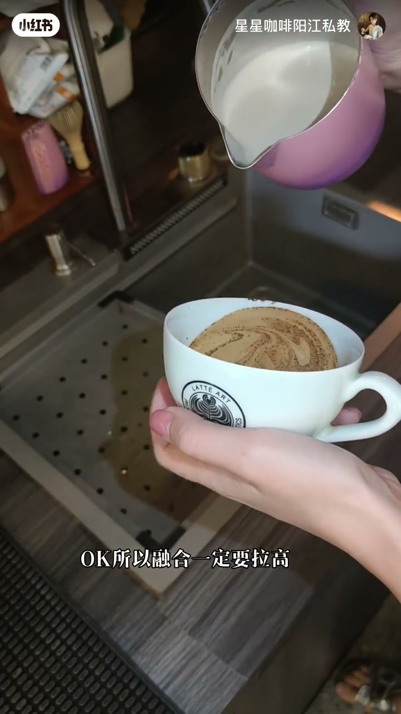
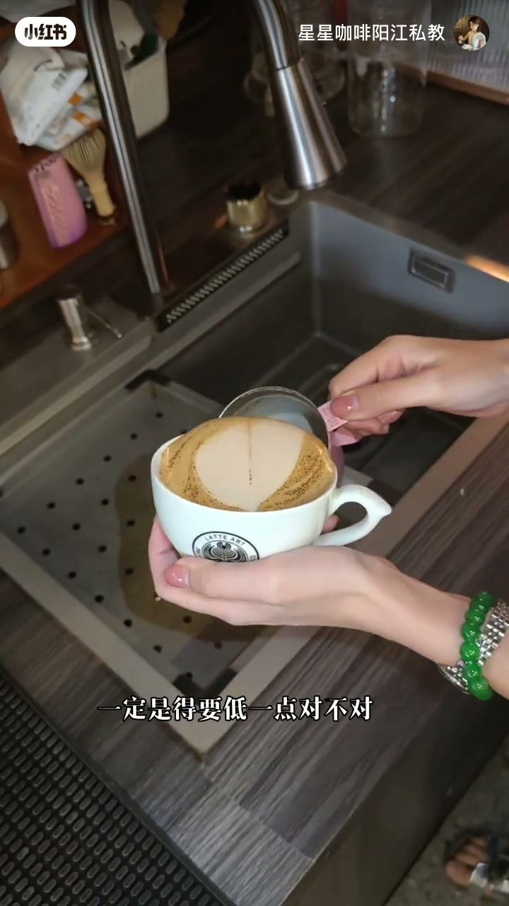
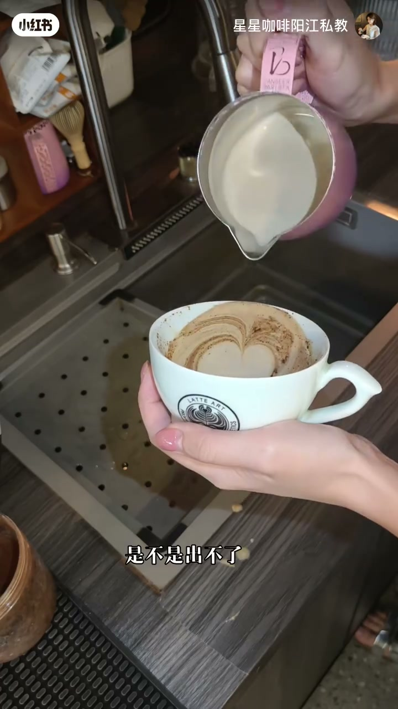
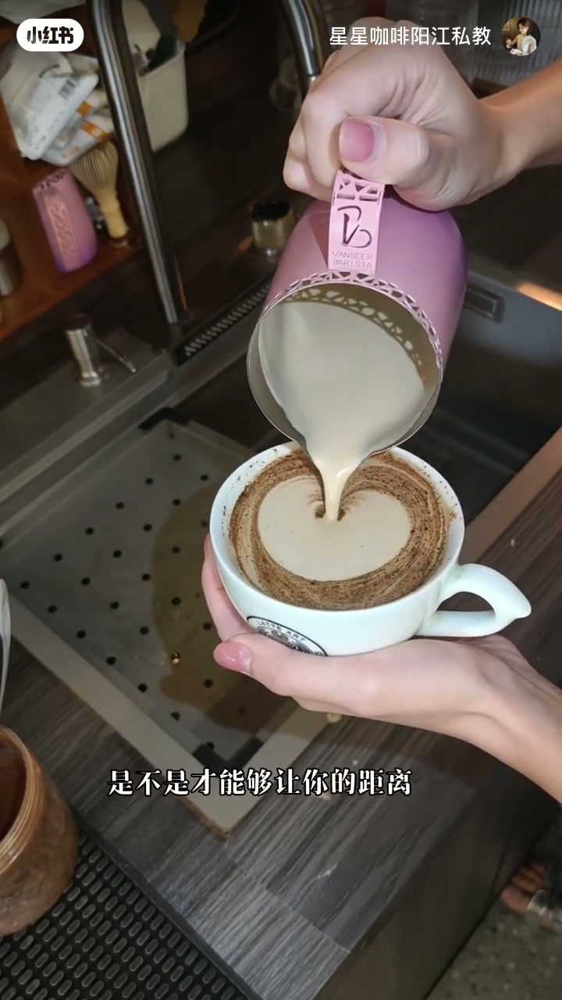
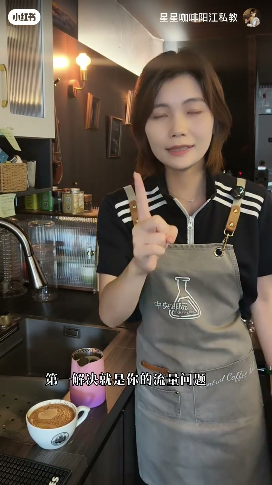

内容要点
短片核心不是炫技心形，而是纠正新手「不敢倒」：流量太小等于故意不出图；融合与出图用不同高度，先解决流量再谈均匀与距离。
知识结构
画面大字直接点题；作者说今天这条特别适合刚入门学拉花的朋友——先理解出图原理，再纠结细节。
融合阶段「一定要拉高」让奶液潜入混合；到出图则「一定得要低一点」，心形成品证明贴近液面才出得了白。
不敢放流量「就是为了不出图」；低流距约一厘米就够；一边贴近一边注入一边回杯，作者也坦白自己有时「回杯太快」。
总结两条：第一解决流量问题（够不够胆、够不够均匀）；第二个才是距离——别颠倒顺序去抠手腕玄学。
新手出不了图，优先检查有没有把流量放出来；融合高、出图低（约1厘米），流量稳了再谈回杯节奏。
开场：给入门学员的一句胆子
00:00 → 00:12
镜头是咖啡培训吧台：作者穿着「中央啡院」围裙，身后是意式机、豆袋和证书奖杯。屏幕大字叠在画面上——「你只要够胆放流量，你的图案一定能够出来」。口播（Whisper 记成繁体）大意是：今天这条非常适合刚入门学拉花的朋友。笔记文案也写明意图：先理解出图原理，再去纠结细节。
融合拉高，出图压低
00:12 → 00:40
切到俯拍：白杯盛浓缩，粉紫渐变奶缸开倒。字幕反复强调「融合一定要拉高」「高融合」——这一阶段要把奶液打进液面底下搅匀底色，而不是贴着表面白白一层。随后成品是一颗清晰心形；作者又提醒出图阶段「一定得是要低一点」——同一套动作里，高度要换挡，不是从头到尾一个高度怼到底。


不敢放流量，等于故意不出图
00:40 → 01:30
演示里作者用对比语气问：小心翼翼掐着流量，「就是为了不出图对不对」。接着讲低流距——奶缸嘴离液面大概一厘米就够；可以先故意抬高给你看「我这么高」，再压回贴近。操作口诀压成三件事同时发生：一边贴近、一边注入、一边回杯。她也不装完美，字幕自嘲「但是我回杯太快」——说明回杯节奏是第二层问题，前提仍是流量与贴面。


总结：先流量，再均匀与距离
01:30 → 02:12
回到面对镜头。台面上放着刚才的心形成品和粉紫奶缸。作者抬手指强调：「第一解决就是你的流量问题」——接着追问流量是否够均匀；「第二个」才是距离。短片收束在这条优先级上：别一上来抠手腕细节，却不敢把奶流放出来。元数据话题标签也指向「拉花出图原理」「大白心拉花」——和画面演示一致。
